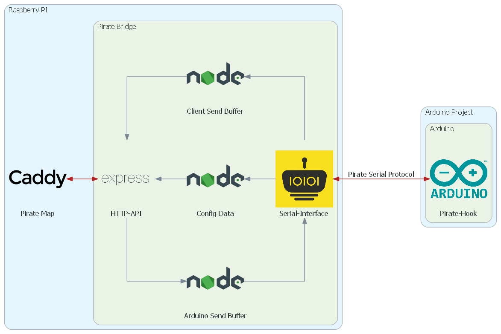

Implementation#
The Bridge primarily has two components:
- One for communicating with the Arduino
- and one to communicate with the clients.
In addition it serves the Pirate Flag.
Primary Components#
As already stated the Bridge primarily has two components, one facing the serial port and one implementing a HTTP API. The components communicate internally by writing into shared buffers for data to be sent / received.

The components are written in Javascript and executed on NodeJS.
Communication with the Arduino#
The Pirate-Hook can send messages to the Raspberry PI at "any time" but the communication to the Hook on the Arduino from the Raspberry PI is polling based with the Hook being the initiator. Here is more information about the implemented serial protocol.
On the Node side a library called serialport is used. With it the Bridge can read from connected serial devices. The library provides an event based API, in which every time a message is received a callback is triggered.
To enable high speeds the serial protocol is primarily not string based, but transfers memory content directly. Because of this every value a byte can take can be present on the serial interface in almost any order. For instance 0x0A (a 10) the ASCII equivalent of "\n", a standard delimiter for serial communication could be present in any variable being sent over the wire. To eliminate this risk a unique delimiter "0xFF,P,i,r,A,t,E,\n" is used. It was chosen, because it is longer than a 4 byte variables, has a non String character, and also the standard delimiter. This results in a sequence of bytes that is highly unlikely to be ever sent over the serial interface by accident. The used library provides functionality to use such custom delimiters. When a message is detected between such delimiters a callback is triggered.
In the callback the type of message is read from the first byte and depending on the message type different handlers are used process rest of the message. There are 4 general categories of Message:
- Debug messages from the Hook
- Config messages with meta data about the variables on the Arduino
- Requests for data by the Hook
- Receive messages from the Hook with variables
Debug Messages#
To help debugging the Hook provides the functionality to send strings designated as debug over the interface. These are then directly printed to the console log of the node application.
Config Messages#
To enable communication the Hook aggregates all the necessary information about the variables to be sent or received for instance: index, name, datatype etc. and sends it to the Bridge. There it is stored for later use by the callbacks. Primarily this information is used to to correctly interpret and encode the serial buffer content and to forward the information to the Flag. Another benefit is, that the message sizes can be matched against the configuration data.
Before these config messages are sent at boot a start sequence is sent by the hook: 0xEE,P,i,r,A,t,E,\n
Any bytes sent before this start sequence are discarded. This is necessary because on start old values in the serial buffer may disturb correct config messaging.
Request for Data#
When data is requested by the Hook a Buffer ("Arduino Send Buffer") is checked for outstanding variables to be sent to the Arduino. These are then batched together with their index into packages as big as the input Buffer on the Arduino allows. Naturally sent variables get removed from the buffer. In case a variable is to long to be sent, a long string, in that particular package the rest of the buffer is checked for variables that fit. In the subsequent request the variables that where skipped have a higher priority and are sent. The "Arduino Send Buffer" is implemented as a dictionary with the indexes as keys. This is done, so that only the most recent version of a variable is sent and no index is sent twice.
Receive Data#
Most traffic is generated with the send messages. When the message type does not match one of the previous categories the message is handled by the "Receive Data Handler". It reads the type, index and data of the message and if it knows the type it writes, under the current timestamp, the index value pair into the "Client Send Buffer".
Communication with the Clients#
The HTTP communication uses the Expressjs framework. It enables easy implementation of the client facing API. Similarly to the serialport library this framework is also callback based. There are four major endpoints:
- Provide Config
- Accept new variables to be sent to the Arduino
- Reflect these changes to the other clients
- Send a Stream of data from Arduino to all Clients
Config#
The "/getconfig" endpoint responds to GET requests and returns the "config data" object in JSON encoding.
Control#
The "/ctrl" endpoint similarly reacts to GET requests. The callback checks if the datatype of the variable matches the config and then adds it to the "Arduino Send Buffer". Afterwards it also notifies all clients that listen to the configUpdates endpoint.
Configuration Updates#
The "/configUpdates" endpoint is a SSE-stream. Here clients can register to be notified to changes, that any client made via the "/ctrl" endpoint. This is possible, because clients send a UUID, a unique id, with their control requests and these ids get sent together with the updates in this stream. On the client side each client can check if the update was cause by themselves and ignore it, or act on the changes.
Data stream#
The "/stream" endpoint is arguably the most important one. It also is implemented as as SSE-stream. Whenever a client accesses this stream they are added to a list of clients to be notified of all the data the hook sends. This data is sourced from the "Client Send Buffer". Cyclicly this buffer gets emptied and if any data was present each registered client gets sent the content. This operation is repeated every 16 milliseconds to enable a 60 Hz refresh rate.
The data is stored in the "Client Send Buffer" with the timestamp as the first key and the variable index as the second. The timestamps have a resolution of microseconds. This means each variable can only be added to the buffer if they have a unique timestamp/index combination. In praxis this has not resulted in a problem, because other bottlenecks occurred earlier.
Pirate Flag#
Temporarily the client website is being served by the NodeJS application under the GET "/" endpoint.